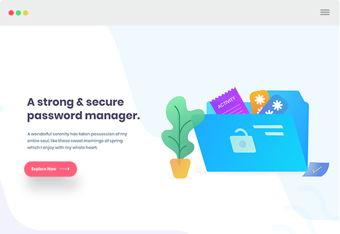
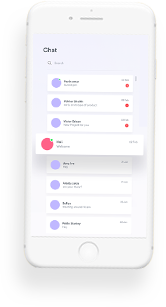
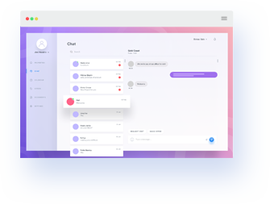

If users post the true information, he/she will get the rewarding points and oppositely, they will be declined some
points.
Get Appointment
- alfena@yousite.com
- +(000) 000 0000
Life Helper
Available Soon
A platform which can collect information refer to “water outage”, and the platform can send message automatically to
notify people the sources and give them enough time to prepare for attaining life-need water from other sources.
The gamification
We decide to have one grading system:
-
Rewards
-
GradesOnce users have enough point to up to more advanced grade, they will have more authority, like they can publish more incident and no limit, they can use the colorful words and so on.
-
Report SystemOnce users have true report, we will give him/her points.
-
CommunityIf someone write down enough comments, agreements and giving a like to one incident, the user will get more points.

Piao Yucheng
Team manager
Momoko
Code principal
Chen Yuansong
Coder and plan developer
Zhang Yuxuan
Assistance
Kim Yongmin
Coder and plan developer
Xie Yizhan
Lit reviewer
The collection and authenticity of information
01
Collection
Absolutely, the first way is we allowed users to submit the incident they have meet through the “submitting function” to
post on our platform. By which, we can get brand new information on the real-time.


02
Collection
Further more, we decide to use the API to collect all the information from LINE, TWITTER, WECHAT and other else, and use
filter to select useful information. Then they will be automatically post on our platform.
03
Authenticity filter
The first one is adding one voting function to make all users vote this incident is true or false. Then adding one
accounting programming to calculate the number and get the truth automatically.


04
Authenticity filter
The second one is adding reporting system, if someone is tell a lie on our platform, we allow users to inform that
person and we will afresh investigate this information by voting and probably give him/her a punishment.
The display mode
Form
The first usage is using the words. We decide to add one select/search button on our platform. That form can make users find something they want quickly.
Spot map
The second usage is using the spot map, the function can show all the incident in our city on real-time by using point to mark the map. Which can make you avoid the incident.
Alarm
Finally, we will send one(several) message(s) to your mobile phone to alarm you.
A native app for every platform
Efficiently unleash cross-media information without cross-media value. Quickly maximize timely deliverables for real-time schemas. Dramatically maintain clicks-and-mortar solutions without functional solutions.leveling customer service .



Literature review
In modern society, In Dalian city, when the water company turn off the water supply, it is most likely cannot post
everyone a massage about “we have no water”, electricity company is also in this condition. Further more, people who
lost something significant can only publish one twitter, one line post, one wechat or other thing else. However, if the
person found the item and post this message on another platform, they will miss each other. Even though they can
communicate with police, that is low-efficiency. And someone found that probably cannot run a long distance to go to
police office on the first time. Finally, some place in one day or several days will be crowed for a long time. Because
of some private, commercial and public activities approved by the government. Government will not waste the information
resource on this filed. As the result, this condition make bad influence for public travel. To solve these problems. We
decide to design one platform on internet to collect all incidents’ information about sudden shut-down of water,
electricity and gas, someone lost something and even somewhere is very crowd on one day in Dalian city in China. Which
can help people to be prepared for these contingencies and help citizens post useful information or share the massage
about the item they have lost. According to these background we want to call this platform “Life Helper”, in Chinese is
called “生活小助手”, in Japanese is called “生活アシスタント” and in Korean is called “작은 생활보조”.